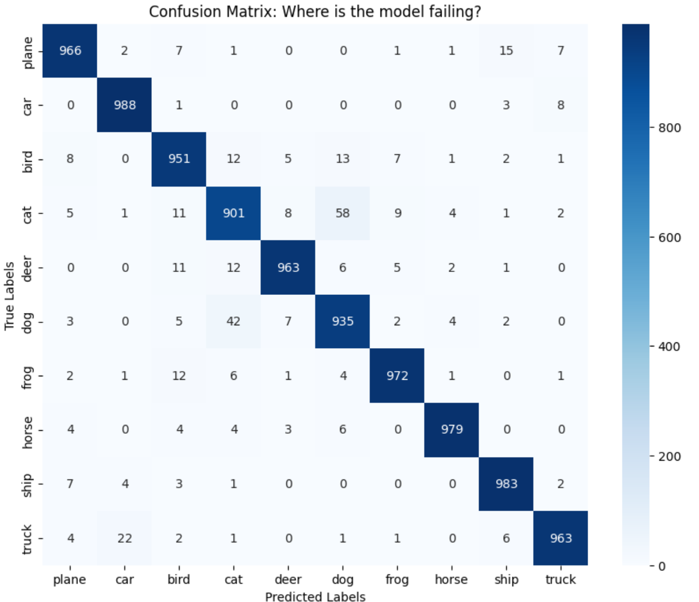

CIFAR-10: 96% Accuracy
Custom 5M Parameter Model
(January 2026)
Project Notebook: Training logs and code
Summary: This project demonstrates a compact (5.3M parameter) deep learning model achieving 96% accuracy on CIFAR-10 using only a single GPU. It highlights architectural efficiency, dual attention, multi-scale input, and aggressive augmentation for robust feature learning.
Problem
Achieve high-performance image classification on the CIFAR-10 benchmark under strict compute constraints, limited to a single-GPU laptop environment. The target was to exceed 90% test accuracy without relying on large-scale compute clusters, excessively deep networks, or parameter-bloated architectures.Solution
A 5.3M-parameter model combining efficient architectural design with aggressive augmentation.
Model Architecture
Anti-Aliasing Downsampling: Standard max pooling was replaced with a custom BlurPool module to reduce aliasing artifacts and improve shift invariance during spatial downsampling:
class BlurPool(nn.Module): def __init__(self, channels, stride=2): super(BlurPool, self).__init__() f = torch.tensor([1, 2, 1], dtype=torch.float32) kernel = f[:, None] * f[None, :] kernel = kernel / kernel.sum() self.register_buffer('filter', kernel.expand(channels, 1, 3, 3)) self.stride = stride self.groups = channels def forward(self, x): return F.conv2d(x, self.filter, stride=self.stride, padding=1, groups=self.groups)Dual SE Attention: Channel-wise recalibration at feature-map and pooled-head levels.
self.se_spatial = nn.Sequential( nn.AdaptiveAvgPool2d(1), nn.Conv2d(512, 128, 1), nn.ReLU(inplace=True), nn.Conv2d(128, 512, 1), nn.Sigmoid() ) self.se_pooled = nn.Sequential( nn.Linear(1024, 256), nn.ReLU(inplace=True), nn.Linear(256, 1024), nn.Hardsigmoid() )Multi-Scale Input: Parallel 3×3, 5×5, and 7×7 conv branches capture fine-to-coarse features early.This improves early-layer expressivity without excessive depth.
Weight Init: Kaiming Normal for LeakyReLU stability.
Training
Weighted oversampling of Cats/Dogs to target high-error classes.
Aggressive augmentation: RandAugment, Mixup, Random Erasing.
Label smoothing (0.05) to prevent overfitting
Harder training set than validation to enforce robust feature learning.
Outcome
Test Accuracy: 96.01% (5.3M parameters).
Efficiency: Matches ResNet-18 (~11.7M params) and EfficientNet-B0 range.
Generalisation: F1 0.91–0.98 across classes.
Error Analysis: Confusion mostly in Cats vs Dogs and Trucks vs Automobiles; other classes well-separated.
The following heatmap visualises the model's performance across all 10 classes.

Takeaway
High performance is achievable on constrained hardware through principled architectural design and rigorous training, without resorting to brute-force scaling.